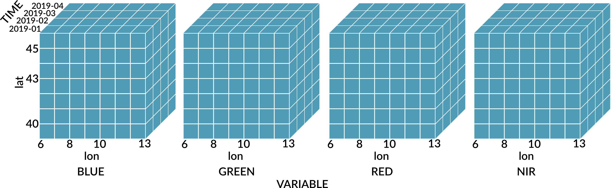

Data cubes
gdalcubes implements regular dense raster data cubes, making the following assumptions (Appel and Pebesma 2019):
- Spatial dimensions refer to a single spatial reference system (SRS);
- Cells of a data cube have a constant spatial size (with regard to the cube’s SRS);
- The spatial reference is defined by a simple offset and the cell size per axis, i.e., the cube axes are aligned with the SRS axes;
- Cells of a data cube have a constant temporal duration, defined by an integer number and a date or time unit (years, months, days, hours, minutes, or seconds);
- The temporal reference is defined by a simple start date/time and the temporal duration of cells;
- For every combination of dimensions, a cell has a single, scalar (real) attribute value.
Data cubes are always four-dimensional (bands, time, y, x).

Spatiotemporal reference
Before creating a cube, users must define its spatiotemporal geometry as a so called data cube view, without connecting it to specific datasets. The data cube view contains
- the spatial reference system (SRS),
- the spatiotemporal extent (left, right, bottom, top, start date/time, end date/time), and
- the spatiotemporal size of pixels (spatial size, temporal duration).
The resolution of dimensions can be specified either by the number of pixels (nx, ny, nt), or by the size of pixels (dx, dy, dt). If the size of the extent in one dimension does not align with the corresponding pixel size, the extent will be enlarged accordingly. For example, assuming left = 1, right = 10, and dx = 2, pixels would start at x = [1,3,5,7,9] such that the last pixel would have size 1. In this case, the extent would be replaced by left=0.5, right=10.5, such that pixels start at x = [0.5, 2.5, 4.5, 6.5, 8.5] and all pixels have size 2.
Please notice that the cube view does not include any information on the band dimension, i.e., the cube view is independent of particular data products.
Handling date/time
The temporal duration of pixels (dt) includes a temporal unit (or granularity). Following ISO 8601 durations, it is defined as a string starting with “P” (period), followed by an integer number and a unit (one of “Y”, “M”, “D”, “TH”, “TM”, “TS”). In contrast to ISO 8601, gdalcubes does not allow to mix several units. For example, the duration "P1M10DT2H" (one month, 10 days, and 2 hours) will produce an error.
If dt uses a larger datetime unit than t0 and t1, the temporal extent is enlarged. For instance, defining t0 = "2019-03-05", t1 = "2019-06-05", and monthly temporal resolution dt = "P1M", will lead to the extent t0 = "2019-03" and t1 = "2019-06", such that the data cube covers the full March and June of 2019.
Examples
The spatiotemporal reference of a cube can be set using the cube_view() function, as in the examples below.
v = cube_view(srs = "EPSG:4326",
extent = list(left = 6, right = 7, bottom = 50, top = 51,
t0 = "2022-01-01", t1 = "2022-04-30"),
dx = 0.01, dy = 0.01, dt = "P1D")
v1 = cube_view(v, dt = "P1M") # modify existing data cube view object
w = cube_view(srs = "EPSG:3857",
extent = collection, # use extent from an image collection
dx = 100, dy = 100, dt = "P1D")Creating data cubes from image collections
Combining a data cube view with an image collection yields a regular raster data cube with band data from the image collection and geometry from the data cube view.
To read values of data cube chunk from an image collection, the following algorithm is used (Appel and Pebesma 2019):
Allocate and initialize an in-memory chunk buffer for the resulting chunk data (a four-dimensional bands, t, y, x array);
Find all images of the collection that intersect with the spatiotemporal extent of the chunk;
For all images found:
3.1. Crop, reproject, and resample according to the spatiotemporal extent of the chunk and the data cube view and store the result as an in-memory three-dimensional (bands, y, x) array;
3.2. Copy the result to the chunk buffer at the correct temporal slice. If the chunk buffer already contains values at the target position, update a pixel-wise aggregator (e.g., mean, median, min., max.) to combine pixel values from multiple images which are written to the same cell in the data cube.
Finalize the pixel-wise aggregator if needed (e.g., divide pixel values by n for mean aggregation).
Aggregation and resampling
To build regular data cubes from image collections, individual images are reprojected, rescaled, cropped, and resampled with regard to the data cube view first. Afterwards, pixel values of several images that are located within the same data cube cell (i.e. from different days in the same month) are combined by an aggregation function. Methods for both, spatial resampling and temporal aggregation can be provided in the data cube view. gdalcubes supports all resampling methods implemented in GDAL. Supported aggregation methods include "first", "min", "max", "median", "mean", and "last".
Image masks
When data products include mask bands, pixel-wise quality flags, cloud probability layers, or similar, these can be used to filter pixels of images contributing the data cube cells. In gdalcubes, masks can be defined by band name and a set of mask values (or a value range). If a pixel’s mask band value is within the set of values, this pixel is ignored. Masks can be inverted, such that only pixels for which the value of the mask band is within the provided set will be used. Additionally, a bitwise AND can be applied to extract specific bits of a bit mask only (e.g. for MODIS quality flag bands).
Notice that the masks are applied on images, not on cubes (during step 3.1 in the aforementioned algorithm). As such, masked values simply will not contribute to the pixel-wise aggregation.
Examples
The following example combines an image collection and a data cube view to create a data cube using raster_cube().
collection = image_collection("/path/to/collection.db")
v = cube_view(srs = "EPSG:3857",
extent = collection,
dx = 100, dy = 100, dt = "P1D",
aggregation = "median", resampling = "bilinear")
raster_cube(collection, v) # no mask
mask = image_mask("CLOUD_PROB", min = 50, max = 100))
raster_cube(collection, v, mask) # mask from CLOUD_PROB bandIndexing data cubes
Data cubes can be accessed using the common [] operator. Indexes can be provided as integer array coordinates (zero-based), or using labels (band names and spatiotemporal coordinates respectively). For integer array indexes, pixel \((i_t, i_y, i_x) = (0, 0, 0)\) is located in the top left corner at the starting time of the cube.
Dimensions can be derived automatically by the type of the indexing object and by the position, assuming the order band, time, y, x. Trailing dimensions that are not modified can be omitted.
The following examples show how data can be selected by integer array coordinates where the dimension is looked up by position.
# x is a data cube
x[0, 0, 0, 0] # first band, top-left pixel at starting time
x[, 0, 0, 0] # same pixel, all bands
x[, 1] # all bands, full image at time = 1
x[0,,200,200] # first band, time series at pixel (200,200)
x[1] # data cube of the second band only
x[c(1,2)] # data cube of the second and third band only
x[,0:9,,] # first ten image slices, all bands
x[c(1,2)] # data cube of the second and third band only
x[,0:9,,] # first ten image slices, all bands
x[0:2,0,0:100,0:100] # three bands, first image slice, spatial subsetFor the spatial dimensions, it is not possible to provide arbitrary (irregular) vectors. For example, x[0, 1, c(0,2,4), c(1,2,3,9)] will produce a warning and use the minimum and maximum values of the provided values to select the full range (equivalent to what you might expect from x[0, 1, 0:4, 1:9]).
The following examples show how labels and objects of different types can be used for a more user-friendly selection.
# x is a data cube
x["B01"] # band with name "B01"
x[c("B01", "B08")] # bands "B01" and "B08"
x[, c("2001-01-01","2001-01-31")] # all bands, image slices from 2001, Jan, only
x[list(left=388941, right=766552,
bottom=4345299, top=4744931)] # spatial windowAdditionally, spatial selection support points and bounding box types from the sf package(Pebesma 2018) using sf::st_point() and sf::st_bbox().